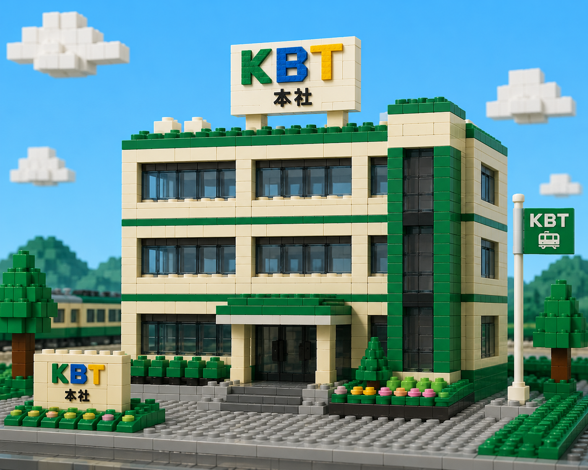
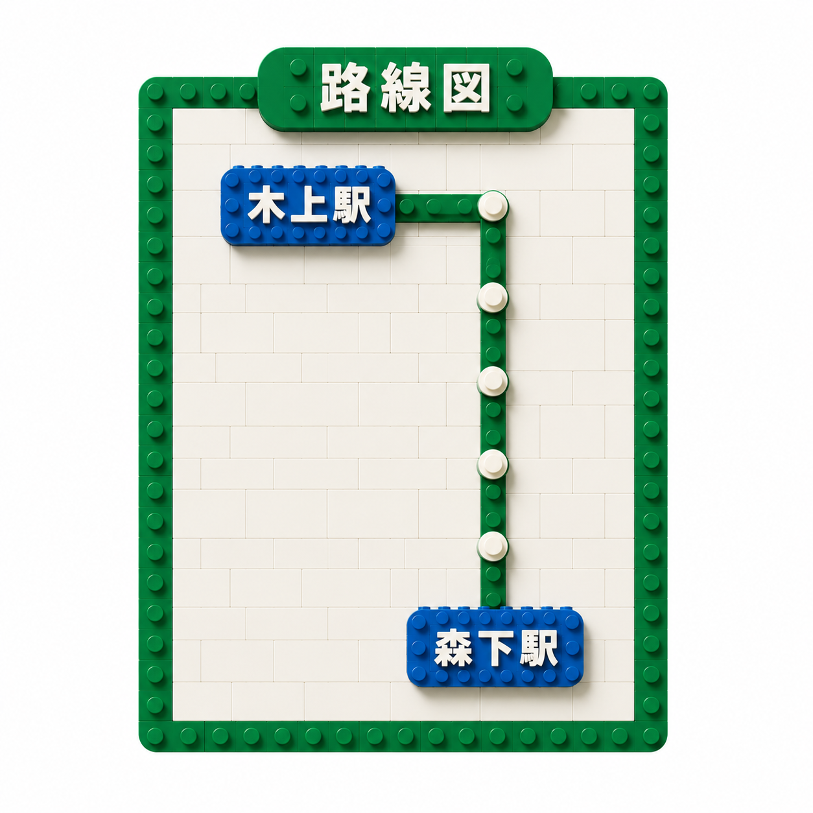
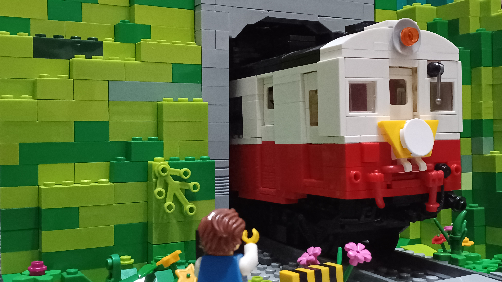
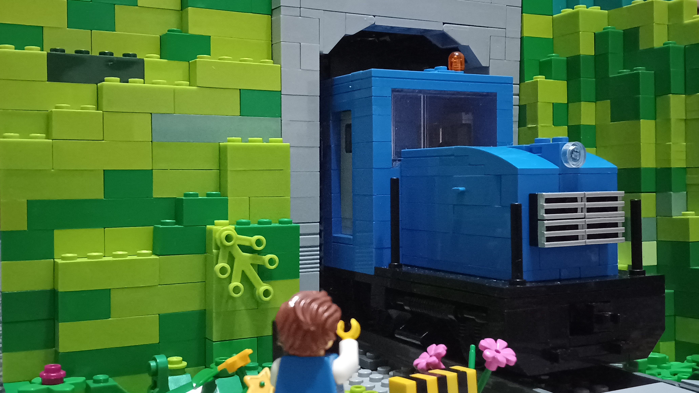

最近のお知らせ
- 2026.06.01 安全報告書を公開しました
- 2026.05.20 木上駅前の「ブロック広場」が完成！
会社紹介

錦中（きんちゅう）ブロック鉄道は、木上と森下を結ぶ全長2kmの短い路線ですが、みんなの夢を乗せて走ります。
路線図

時刻表
| 時 | 木上駅 発 | 森下駅 発 |
|---|---|---|
| 6 | 00 | 30 |
| 7 | 00 / 30 | 15 / 45 |
| 8 | 00 / 30 | 15 / 45 |
| 9 | 00 | 30 |
| 10 | 00 | 30 |
| 11 | 00 | 30 |
| 12 | 00 | 30 |
| 13 | 00 | 30 |
| 14 | 00 | 30 |
| 15 | 00 | 30 |
| 16 | 00 | 30 |
| 17 | 00 / 30 | 15 / 45 |
| 18 | 00 / 30 | 15 / 45 |
| 19 | 00 / 30 | 15 / 45 |
| 20 | 00 | 30 |
| 21 | 00 | 30 |
| 22 | 00 | 30 |
運賃表
| 区間 | 大人 | ミニフィグ |
|---|---|---|
| 木上 ⇔ 森下 | 3パーツ | 1パーツ |
※1x2タイルブロックを1パーツとして計算します。
路線の歴史
- 1990年： 「錦中ブロック鉄道」として、木上〜森下間が手回しトロッコで開業。
- 2005年： 糸町鉄道から譲渡されたキハ1000-1（旧キハ26-919）が運行を開始しました。
- 現在： キハ2000の導入により、ラッシュ時によるキハ1000との2両運転が可能になりました。
車両紹介

キハ1000-1 一般色
糸町鉄道から譲渡された「キハ26-919」を錦中線向けに改造した気動車です。
国鉄時代の懐かしい見た目と塗装でとても人気のある車両です。

キハ2000-2 北武塗装
北武鉄道から譲渡された「キハ55-501」を錦中線向けに改造した気動車です。
特殊改造により、キハ1000との併結 2両運転が可能になりました。

DB10-3 青塗装
糸町鉄道から譲渡された「DB10-26」を錦中線向けに改造したディーゼル機関車です。
主に、車両の入れ換えやイベント列車の牽引機として運転されます。
駅掲示ポスター
駅構内で掲示中のポスターをご覧いただけます。
※車内マナーを守って、楽しい列車の旅を！